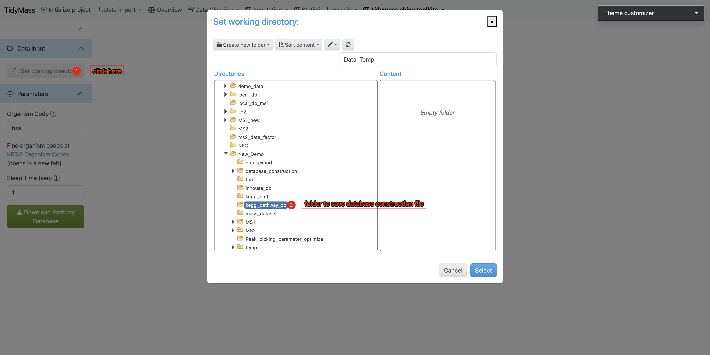
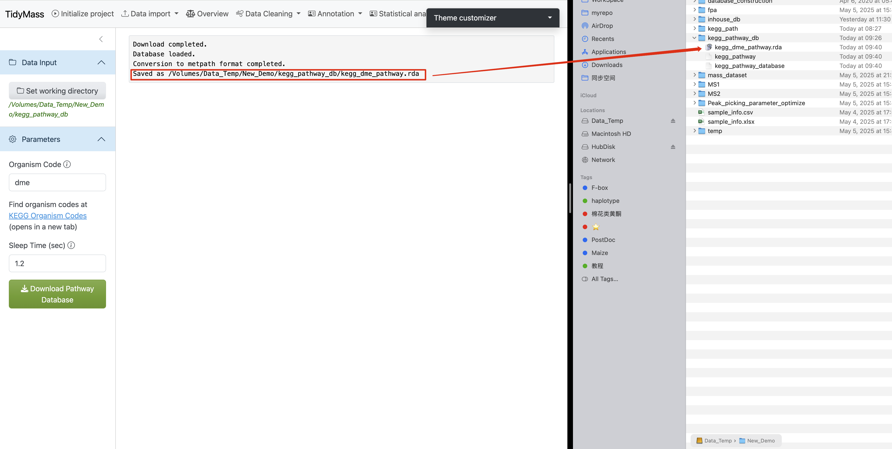

5 Operational Workflow
Directory Preparation Create a dedicated working directory (e.g.,
kegg_pathway_db). Navigate to theKEGG Pathway Database Constructiontool under theTidymass Shiny Toolkitsdropdown menu in the tidymass shiny interface.Workspace Configuration
- Click
Set working directoryin the sidebar’s Data Input section - Select the newly created
kegg_pathway_dbdirectory 
- Click
Parameter Settings Under the Parameters section:
- Enter the target organism code (case-sensitive)
- Set sleep time between 1-1.5 seconds (minimum 1s to prevent server overload)
- Initiate download by clicking
Download pathway
Execution Monitoring
- A progress bar will appear in the lower-right interface
- Real-time KEGG pathway data retrieval requires stable internet connectivity
- If interruptions occur:
- Verify network connection
- Consider increasing sleep interval

Completion Verification Upon successful database construction:
- The main interface displays execution logs
- File paths of generated databases are explicitly shown 
This automated process ensures reproducible creation of organism-specific KEGG pathway resources while maintaining compliance with KEGG server access protocols.
- Use your pathway database in KEGG enrichment analysis
In the annotation results, you will find that Pathway IDs adopt the organism code (e.g., dme) from your custom database as their prefix. This confirms that your provided database was successfully utilized during the KEGG enrichment analysis.